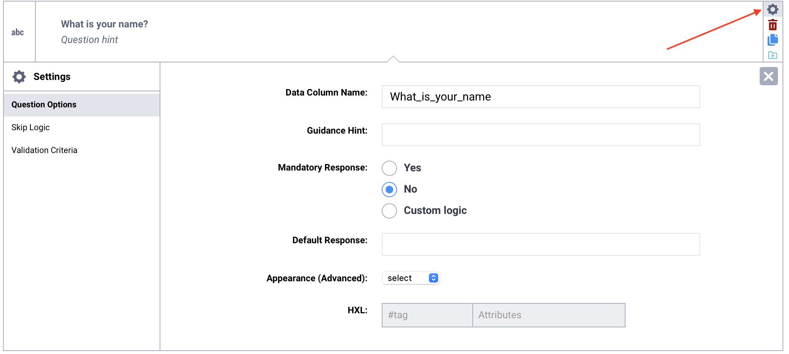
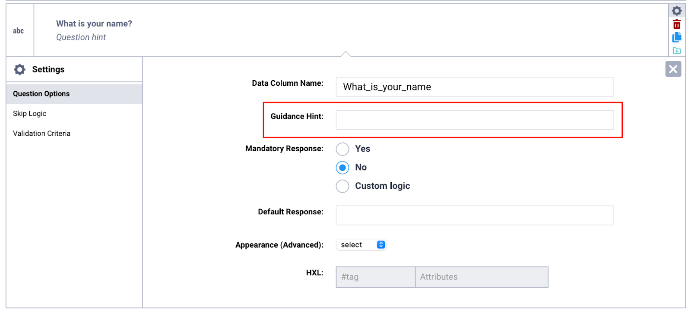
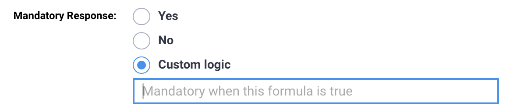
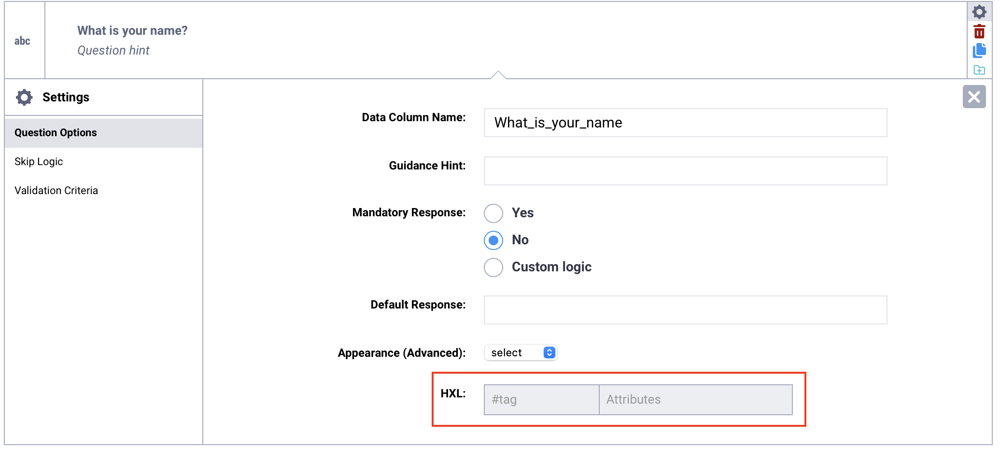

Busca en nuestra documentación, explora nuestros recursos y visita nuestro Foro de la Comunidad para obtener información más detallada
Última actualización: 23 Apr 2026
Después de agregar una pregunta a tu formulario, puedes personalizar cómo se comporta y aparece ajustando sus opciones de pregunta. Estas configuraciones te permiten controlar diversas opciones de pregunta, desde el nombre de la variable y las respuestas obligatorias hasta funciones de visualización avanzadas y etiquetas HXL.
Este artículo explica cómo acceder a las opciones de preguntas en el editor de formularios de KoboToolbox (Formbuilder), describe las configuraciones disponibles y proporciona orientación sobre cómo y cuándo usar cada opción de manera efectiva.
Para acceder a las opciones de preguntas en el Formbuilder:
Haz clic en Configuración en el menú del lado derecho de la pregunta.
Esto abre la ventana Opciones de pregunta, donde puedes configurar ajustes adicionales para la pregunta seleccionada.

Las siguientes opciones están disponibles para las preguntas agregadas en el Formbuilder:
Opciones |
Descripción |
|---|---|
Sugerencia de pregunta |
Texto que se muestra debajo de la etiqueta de la pregunta para proporcionar instrucciones adicionales o aclaraciones para los encuestados. |
Nombre de columna de datos |
El identificador único de una pregunta, utilizado en la lógica del formulario y como encabezado de columna en el conjunto de datos exportado. |
Sugerencia adicional |
Notas o instrucciones adicionales destinadas a los encuestadores o desarrolladores del formulario, que no se muestran de forma predeterminada durante la recolección de datos. |
Respuesta obligatoria |
Una configuración que determina si una pregunta debe ser respondida antes de que el encuestado pueda continuar o enviar el formulario. |
Respuesta predeterminada |
Una respuesta predefinida que se completa automáticamente en una pregunta y puede modificarse durante la recolección de datos. |
Aspecto (avanzado) |
Una configuración opcional que modifica cómo se muestra o comporta una pregunta en el formulario. |
HXL |
Un hashtag estandarizado utilizado para etiquetar preguntas según el marco del Lenguaje de Intercambio Humanitario (HXL) para facilitar la interoperabilidad y el procesamiento de datos. |
Archivos aceptados |
Especifica qué tipos de archivo se pueden cargar en una pregunta de tipo Archivo, indicando las extensiones de archivo permitidas separadas por comas. |
Parámetros |
Configuraciones adicionales disponibles para ciertos tipos de preguntas que permiten personalizar el comportamiento, como aleatorizar las opciones de respuesta o limitar el tamaño máximo de imagen. |
Archivo de opciones |
Permite seleccionar qué archivo externo se usará como fuente de opciones para las preguntas Seleccionar una de un archivo y Seleccionar varias de un archivo. |
Nota: Para personalización adicional y opciones avanzadas, descarga tu formulario como XLSForm y agrega opciones de preguntas directamente en la hoja de cálculo.
El nombre de columna de datos es el identificador único de cada pregunta en tu formulario. Funciona como el nombre de variable utilizado en la lógica del formulario y se convierte en el encabezado de columna en tu conjunto de datos exportado.
Cada pregunta debe tener un nombre de columna de datos único. En el Formbuilder, se genera automáticamente a partir de la etiqueta de la pregunta, pero puedes personalizarlo según sea necesario. Definir nombres claros y consistentes antes de implementar tu formulario ayuda a garantizar que tu conjunto de datos siga una convención de nomenclatura lógica.

Si mantienes el nombre de columna de datos generado automáticamente, este se actualizará automáticamente cada vez que cambies la etiqueta de la pregunta. Esto puede causar problemas si ya configuraste lógica de formulario en código XLSForm usando el nombre de columna de datos anterior, o si ya comenzaste a recolectar datos.
Si el nombre de columna de datos de una pregunta cambia después de que comenzó la recolección de datos, KoboToolbox lo tratará como una nueva variable. Esto resultará en dos columnas separadas en tu conjunto de datos.
Por esta razón, se recomienda definir y finalizar el nombre de columna de datos de cada pregunta antes de implementar tu formulario y recolectar datos. Si realizas cambios sustanciales intencionales en una pregunta y quieres que funcione como una nueva variable, puedes actualizar el nombre de columna de datos en consecuencia.
Los nombres de columna de datos deben seguir estas reglas:
Usa solo letras, números y guiones bajos.
El primer carácter debe ser una letra.
Cada nombre debe ser único dentro del formulario.
Nota: Los nombres de columna de datos se utilizan al referenciar respuestas en la lógica del formulario. Por ejemplo, puedes incluir una respuesta anterior en la etiqueta de otra pregunta usando el formato ${data_column_name}. Este formato se usa en etiquetas, lógica de omisión, cálculos y validaciones. Los nombres de columna de datos distinguen entre mayúsculas y minúsculas.
Las sugerencias de pregunta se usan para proporcionar información adicional a los encuestados o encuestadores directamente en el formulario. Siempre son visibles y se muestran debajo de la etiqueta de la pregunta.

Las sugerencias adicionales se usan para proporcionar información adicional durante el desarrollo del formulario, la capacitación de encuestadores o la recolección de datos. No se muestran de forma predeterminada.

En los formularios web, las sugerencias adicionales aparecen en una sección Más detalles desplegable. En KoboCollect, están ocultas de forma predeterminada, pero puedes cambiar la configuración de tu proyecto para mostrarlas siempre o en una sección desplegable.
Para mostrar sugerencias adicionales en KoboCollect, sigue los pasos a continuación:
Toca el ícono del proyecto en la esquina superior derecha de la pantalla.
Toca Ajustes.
En Manejo de formularios, selecciona Mostrar orientación para preguntas.
Elige una opción de visualización: No, Sí - siempre visible o Sí - contraída.
Nota: Las sugerencias adicionales siempre se muestran en los formularios impresos.
De forma predeterminada, las preguntas de un formulario son opcionales. Configurar la Respuesta obligatoria en Sí hace que el encuestado deba responderla. Esto puede ser útil para garantizar que los envíos estén completos y evitar datos faltantes.

Si un encuestado no responde una pregunta obligatoria, no podrá pasar a la siguiente página ni enviar el formulario. Se mostrará el mensaje obligatorio predeterminado «Este campo es obligatorio».
Nota: Las condiciones de lógica de omisión tienen prioridad sobre las configuraciones de Respuesta obligatoria, lo que significa que si una pregunta obligatoria está oculta por la lógica de omisión, ya no es obligatorio responderla.
Se puede usar lógica de formulario personalizada para hacer que una pregunta sea obligatoria u opcional según una respuesta anterior. Para implementar lógica personalizada para respuestas obligatorias:
Selecciona Lógica personalizada junto a Respuesta obligatoria.
En el cuadro de texto, ingresa la fórmula XLSForm que determina si la pregunta será obligatoria o no.

Para obtener más información sobre la lógica de obligación basada en condiciones, consulta Añadir lógica de obligación en un XLSForm.
Una respuesta predeterminada completa una pregunta con una respuesta predefinida basada en una respuesta común o esperada. La respuesta predeterminada se registrará como la respuesta final cuando se envíe el formulario a menos que el encuestado la modifique durante la recolección de datos.

Nota: Aunque las respuestas predeterminadas pueden hacer que la recolección de datos sea más eficiente al completar previamente el formulario con respuestas esperadas o comunes, también pueden introducir sesgos o errores en los datos, por lo que deben usarse con precaución.
El formato de la respuesta predeterminada depende del tipo de pregunta y los datos que se recolectan:
Tipo de pregunta |
Formato de la respuesta predeterminada |
|---|---|
Número |
Número |
Texto |
Texto (sin comillas) |
Seleccionar una |
Valor XML de la opción |
Seleccionar varias |
Valores XML de las opciones, separados por un espacio si hay varios |
Fecha |
Fecha en formato YYYY-MM-DD. |
Los aspectos de las preguntas te permiten modificar cómo se muestra una pregunta y, en algunos casos, cómo los encuestados interactúan con ella. Algunos aspectos solo son compatibles con los formularios web, mientras que otros solo funcionan en KoboCollect.

Los aspectos disponibles varían según el tipo de pregunta. Consulta el artículo de ayuda correspondiente a cada tipo de pregunta para ver todos los aspectos compatibles.
HXL, o Lenguaje de Intercambio Humanitario, es un sistema estandarizado para etiquetar datos mediante hashtags (#). Es ampliamente utilizado por organizaciones para mejorar el intercambio de información durante respuestas humanitarias y otras situaciones de crisis.
Aplicar etiquetas HXL a tus preguntas ayuda a que tus datos sean más interoperables entre sistemas y organizaciones. También facilita el procesamiento y análisis de datos de manera más eficiente.
En KoboToolbox, puedes asignar una etiqueta HXL por pregunta e incluir atributos de forma opcional. Cuando exportas tus datos como archivo XLS con valores y encabezados XML seleccionados, aparecerá una fila adicional con las etiquetas HXL directamente debajo de los nombres de las variables en tu conjunto de datos.
El uso de etiquetas HXL es especialmente útil cuando tus datos se compartirán con socios o se integrarán en otros sistemas de datos humanitarios.

¿Encontraste lo que buscabas? ¿La información fue clara? ¿Faltaba algo?
¡Comparte tus comentarios para ayudarnos a mejorar este artículo!